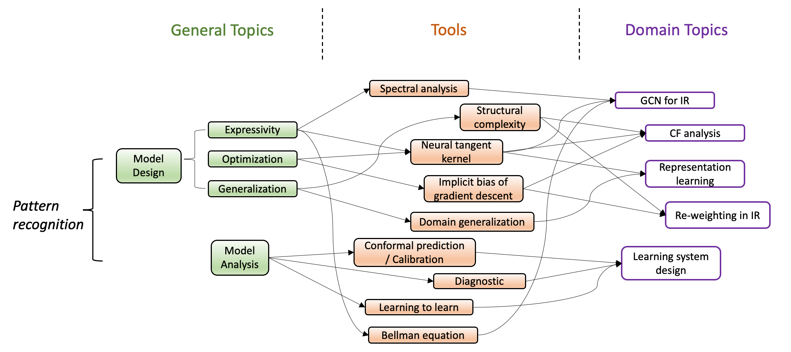
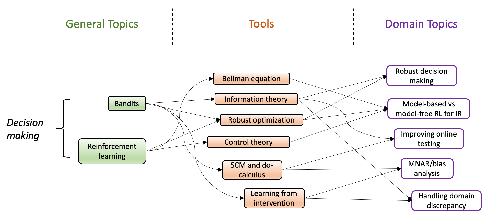

In the relatively short history of machine learning, the subtle balance between engineering and theoretical progress has been proved critical at various stages. The most recent wave of AI has brought to the IR community powerful techniques, particularly for pattern recognition. While many benefits from the burst of ideas as numerous tasks become algorithmically feasible, the balance is tilting toward the application side. The existing theoretical tools in IR can no longer explain, guide, and justify the newly-established methodologies. With no choices, we have to bet our design on black-box mechanisms that we only empirically understand.
The consequences can be suffering: in stark contrast to how the IR industry has envisioned modern AI making life easier, many are experiencing increased confusion and costs in data manipulation, model selection, monitoring, censoring, and decision making. This reality is not surprising: without handy theoretical tools, we often lack principled knowledge of the pattern recognition model's expressivity, optimization property, generalization guarantee, and our decision-making process has to rely on over-simplified assumptions and human judgments from time to time.
Facing all the challenges, we started researching advanced theoretical tools emerging from various domains that can potentially resolve modern IR problems. We encountered many impactful ideas and made several independent publications emphasizing different pieces. Time is now to bring the community a systematic tutorial on how we successfully adapt those tools and make significant progress in understanding, designing, and eventually productionize impactful IR systems. We emphasize systematicity because IR is a comprehensive discipline that touches upon particular aspects of learning, causal inference analysis, interactive (online) decision-making, etc. It thus requires systematic calibrations to render the actual usefulness of the imported theoretical tools to serve IR problems, as they usually exhibit unique structures and definitions. Therefore, we plan this tutorial to systematically demonstrate our learning and successful experience of using advanced theoretical tools for understanding and designing IR systems.
We gave this tutorial during WSDM'22 tutorial day on Monday, 2022-02-21. This tutorial covers the topics around on pattern recognition and some of the topics on decision making.
| Welcome and Opening Remark | |
| Session 1: Pattern recognition & case Study | |
|

There are two critical stages for designing and understanding pattern recognition models: the pre-designing stage where we generate a comprehensive inductive bias for the model, and the post-training stage where we diagnose the model to understand why it behaves in certain ways. We wish to answer the following questions in order to build up the intuition:
However, for deep learning models these questions are incredibly challenging to answer. In this session, we introduce the recent works that provides prespectives to them leveraging the theoretical tools such as neural tagent kernel, implcit bias of GD, structural complexity, domain shift, spectral analysis, and gradient-based attribution. |
|
| Session 2: Decision Making | |
|

Modern IR systems intrinsically build on the understandings of interaction between the information consumer and provider. The exploration-exploitation dilemma thus stands out as a major challenge because there are explicit or implicit costs associated with each interaction. Many are motivated to characterize the underlying dynamics using such as bandits and reinforcement learning (RL). Setting the practicality issues aside, there are critical conceptual challenges unsettled for both approaches. Notably, there is model-based and model-free options for optimizing the policy in each setting, and while many empirical comparisons have been conducted, there is no rigorous conclusion on what conditions bring the maximum performance out of each candidate. During our investigation, we find the optimal control an extraordinary tool and testbed for revealing the strength and weaknesses of many solutions. On the other hand, some empirical studies have found inferior performances from bandits and RL, though they are conceptually more suitable for the tasks. We reveal that this phenomenon is caused by the robustness issue: compared with the static counterparts, online decision-making methods are much more sensitive to the algorithmic uncertainty since they tend to accumulate during the process. Therefore, we introduce the advanced theoretical tools from robust optimization and present real-world examples of how to use them to enhance the robustness of our design. |
|
| Slides | |
Da Xu Machine Learning Manager@Walmart
Chuanwei Ruan Senior Machine Learning Engineer@Instacart
Please reach us at xudastar@gmail.com or ruanchuanwei@gmail.com.
This tutorial is hosted in WSDM2022. Therefore, you might need to register via their official website